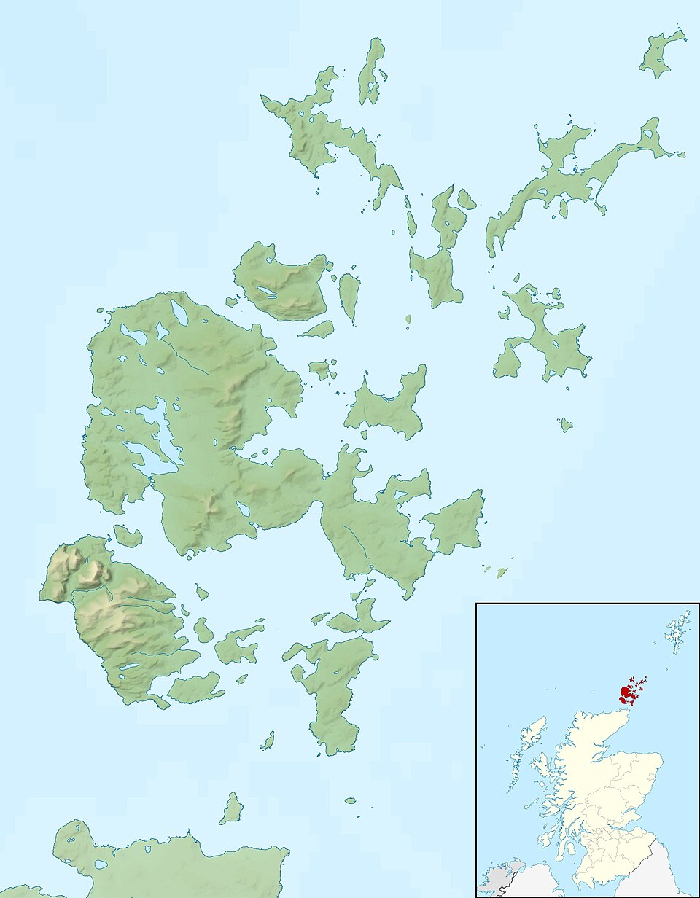
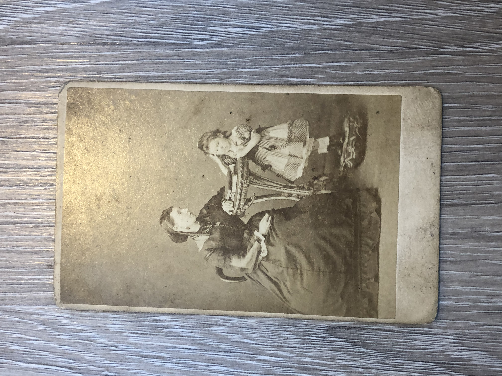
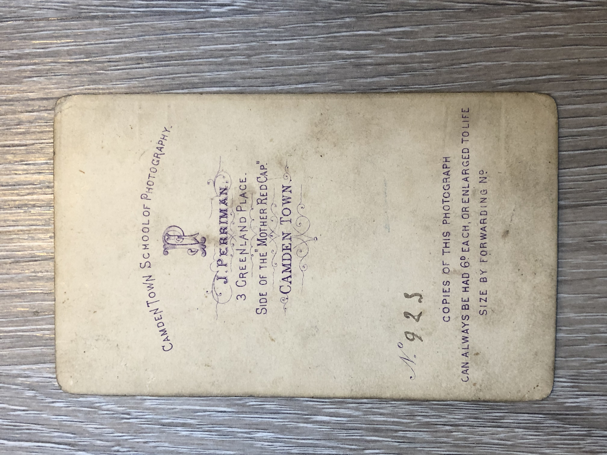
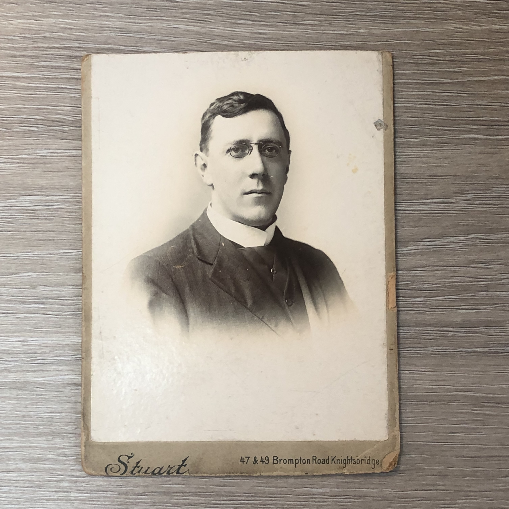
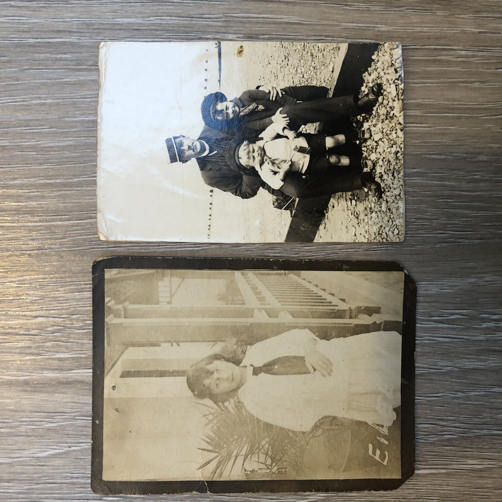
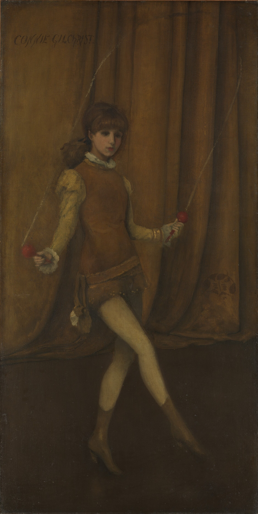
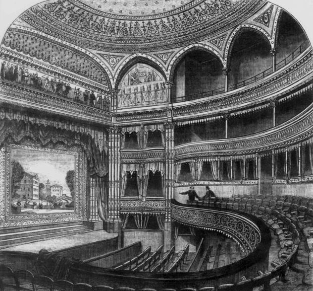
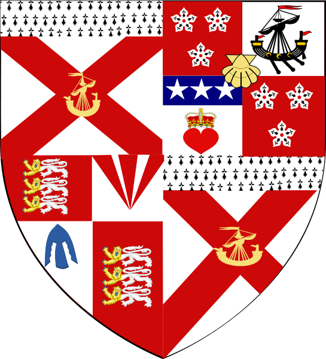
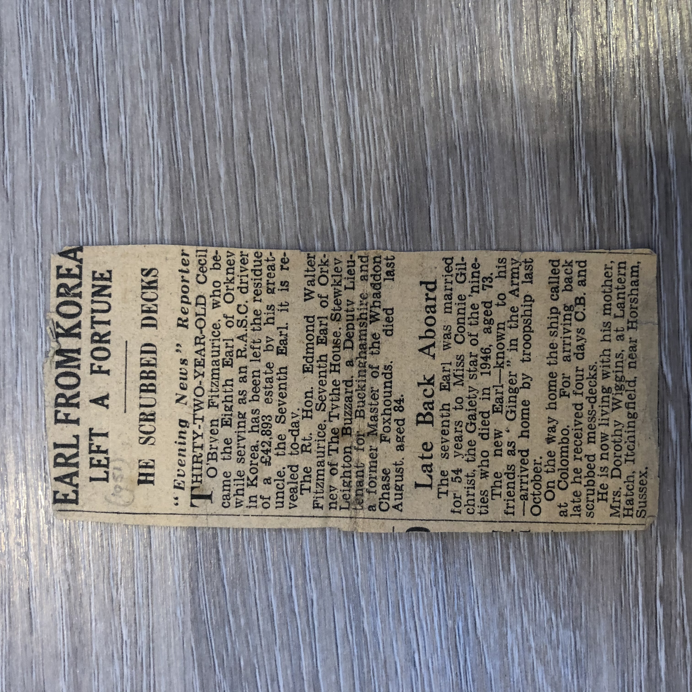

FitzMaurice & Andrews
When my grandmother Patricia Andrews passed away, I found a box of old photographs — cabinet cards, faded portraits, a carefully preserved wedding album from 1950. Some had names written on the back in pencil. Most didn't. I started trying to trace who these people were, and where the pictures had been taken.
What began as a simple attempt to put names to faces turned into something far bigger. The photographs led backwards through time — from a post-war wedding in East London, to a clergyman in Knightsbridge, to a mother and child in a Camden Town studio in the 1860s. And from there, the paper trail opened up into a lineage I never expected: a Scottish king in the 1400s, a Prime Minister who ended the American Revolution, a Gaiety Theatre actress who married an Earl, and an army truck driver called "Ginger" who inherited a 300-year-old title while scrubbing mess-decks on a troopship from Korea.
This site is my attempt to piece it all together. The family tree maps the connections as far back as I can trace them. The coat of arms page explains the heraldry that ties the different bloodlines together. And below is the story of how I got here — starting with a box of photographs and a lot of questions.
Explore the Family Tree
From a Welsh princess to Patricia & Ronald — eight centuries mapped out.
The Family Crest
Every quarter of the shield tells a chapter of the family's story.
The FitzMaurice & Orkney Story
The FitzMaurice name is Anglo-Norman in origin — it means "son of Maurice," tracing back to Maurice FitzGerald, the Norman-Welsh knight who invaded Ireland in 1169. His descendants became one of the most powerful dynasties in Irish and British history: the Earls of Desmond, the Knights of Kerry, and eventually the Marquesses of Lansdowne. One of them, William Petty-FitzMaurice, served as Prime Minister and negotiated the treaty that ended the American Revolutionary War.
The connection to the Earldom of Orkney came through the 5th Earl, Thomas John Hamilton FitzMaurice, who inherited the title in 1826. He is the shared ancestor linking Patricia's branch of the family to the Earls themselves. The FitzMaurice arms — a red saltire on ermine — took the dominant position on the Orkney coat of arms from that point forward.
The 7th Earl, Edmond Walter Leighton FitzMaurice, made headlines when he married Connie Gilchrist — the celebrated Victorian actress and dancer, painted by Whistler, whose portrait hangs in the Metropolitan Museum of Art. The Duke of Beaufort gave her away. It was one of the great society sensations of the age: a Gaiety Girl becoming a Countess.
When the 7th Earl died in 1951, the title passed to his distant cousin Cecil O'Bryen FitzMaurice, an army truck driver known as "Ginger." Cecil had served through North Africa, Italy, France, and Germany in the Second World War, and was on a troopship returning from Korea when he discovered he had become the 8th Earl of Orkney. The Evening News called him a "rags to riches Earl." He was Patricia's mother Amanda's 3rd cousin once removed. Cecil died without issue in 1998, and the FitzMaurice chapter of the Earldom ended with him.

The Wedding of Patricia & Ronald
On a Saturday morning in February 1950, Patricia Mary Fitzmaurice married Ronald Andrews at the magnificent St. Mary the Virgin Church, Wanstead — a Grade I listed Georgian masterpiece designed by Thomas Hardwick in 1790. The marriage was solemnized by the Reverend A.E. Gates at 10:30 a.m.
Patricia, given away by her father, wore a navy-blue suit with a dusty-pink halo hat, grey suede shoes and gloves, and carried a grey suede bag. A spray of red roses adorned her shoulder. Her outfit reflected the practical elegance of post-war Britain — just five years after VE Day, with rationing still in effect.
Due to the close timing needed to assemble guests at Wanstead from various far-away places, little time was available for photographs before the service. The first picture shows the happy couple walking down the aisle. The guest list included Auntie Babs, Uncle Leslie, Auntie May, Elizabeth, Irene, Peggy, Jane, Daisy, Renée, Herb, Laurie (Best Man), and little Sandra.
After the ceremony, the party traveled to the Tudor-style home of Mr. and Mrs. Jack Hinder for the reception. The ceremonial cutting of the cake followed, with the album noting that the baker had thoughtfully pre-cut through the icing for the first slice.
Venue
St. Mary the Virgin
Wanstead, London
Officiant
Reverend A.E. Gates
Church of EnglandReception
Home of Mr. & Mrs.
Jack Hinder
Flowers
Red rose spray
at the bride's shoulder

{kind=link}
{kind=link}
{kind=link}
{kind=link}
{kind=link}
{kind=link}
{kind=link}
{kind=link}
{kind=link}
Clues from the Collection


Camden Town, c. 1865
The earliest photograph in the collection was taken at J. Perriman's studio near the Mother Red Cap pub in Camden Town. A mother and young daughter — likely an earlier Fitzmaurice generation — establish the family's North London roots.

A Clergyman in Knightsbridge
Edward Dixon Fitzmaurice, a Church of England clergyman, was photographed at the prestigious Stuart Studio on Brompton Road, Knightsbridge. His clerical collar, wire-framed spectacles, and Knightsbridge address speak to comfortable Victorian London life.

Babs in South Africa
"Auntie Babs" emigrated to South Africa, photographed on a verandah with wrought iron railings and subtropical plants typical of Cape Colony architecture. This branch of the family reached the furthest corners of the British Empire.


The Gaiety Theatre Connection
Connie Gilchrist, wife of the 7th Earl of Orkney, was a star of the Gaiety Theatre — Victorian London's most celebrated venue. Her marriage into the Fitzmaurice peerage was a society sensation of its era.


The Korean War Earl
Cecil "Ginger" Fitzmaurice was an ordinary army driver who became an Earl while scrubbing mess-decks. His story — from troopship to title — was featured in the Evening News and carefully clipped by the family.
Post-War Wedding, 1950
Patricia's navy-blue suit and dusty-pink hat reflect post-war practicality. Just five years after VE Day, with rationing still in effect, the family gathered at a Grade I listed church for a celebration of hope and renewal.